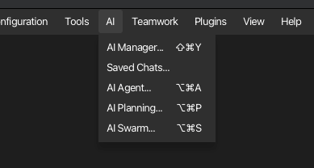

Menu reference¶
Every item in korTTY's menu bar, with its shortcut (where defined) and what it does. The menu bar can be hidden with Ctrl+Shift+L and shown again by right-clicking the terminal or status bar.
File¶
| Item | Shortcut | Description |
|---|---|---|
| New Tab | Ctrl+T | Open Quick Connect in a new terminal tab |
| Close Tab | Ctrl+W | Close the active terminal tab |
| Close All Tabs | Close every tab in the current window | |
| New Window | Ctrl+Shift+N | Open an additional, independent main window |
| Close Window | Ctrl+Shift+W | Close the current window |
| Open Project… | Ctrl+O | Restore a saved project (windows, tabs, layout) |
| Save Project… | Ctrl+S | Save the current session as a project (.kortty) |
| Create Backup… | Ctrl+Shift+B | Create an encrypted backup (ZIP password or GPG) |
| Import Backup… | Restore from a backup file | |
| Quit | Ctrl+Q | Exit korTTY |
Connection entries (Quick Connect, Manage/Import/Export Connections) live in the Connections menu.
Edit¶
| Item | Shortcut | Description |
|---|---|---|
| Cut | Ctrl+X | Cut (disabled for terminal tabs) |
| Copy | Ctrl+C | Copy the terminal selection |
| Paste | Ctrl+V | Paste into the terminal |
| Find… | Ctrl+F | Search the active tab (terminal scrollback or open editor) |
Connections¶
| Item | Description |
|---|---|
| Quick Connect… | Connect to a host without saving |
| Manage Connections… | Open the Connection Manager (tree, search, edit) |
| Import… | Import connections from other clients |
| Export… | Export connections |
| SFTP-Client… | Open the dual-panel SFTP file manager |
Security¶
| Item | Description |
|---|---|
| Credentials… | Manage stored credentials (encrypted) |
| GPG-Keys… | Manage GPG keys used for backup encryption |
| SSH-Keys… | Manage SSH keys and passphrases |
Configuration¶
| Item | Description |
|---|---|
| Global Settings… | Open the global Settings dialog (all tabs) |
| Prevent System Sleep | On macOS and Windows, enable activity-based system-sleep prevention. The computer is kept awake only while a terminal is connected, an enabled Scheduler job has a future run or is running, or an AI request is in progress. With none of these activities, system sleep remains available even while the item is checked. Display sleep is unaffected. On Linux the item is visible but disabled. |
See the Settings reference for every individual setting.
Tools¶

| Item | Description |
|---|---|
| Snippet Manager… | Create, edit, organize, send and export command snippets |
| JobScheduler… | Schedule background command / snippet / AI-agent / AI-swarm / SFTP / Rsync jobs |
| Video Manager… | Manage terminal recordings and export to WebM/MKV via ffmpeg |
| Start/Stop Terminal Recording | Toggle recording of the active terminal (Ctrl+Shift+E) |
| Session Journals… | Manage session journals: search, open, rename, describe, export and delete them, and set the journal options (Ctrl+Alt+J) |
| Start/Stop Session Journal | Toggle the session journal of the active terminal tab; starting mid-session imports the existing scrollback (Ctrl+Alt+T) |
| Add Journal Screenshot | Snapshot the active terminal into its running session journal (Ctrl+Alt+C) |
| ASCII Art… | Two tabs in one dialog: Text Banner renders text as a FIGlet banner in multiple font styles, AI Picture lets an AI profile draw a subject as ASCII art |
The three session-journal items stay visible but are disabled when an enterprise policy denies the session-journal feature.
AI¶

| Item | Description |
|---|---|
| AI Manager… | Manage AI profiles, integrated GGUF models, RAG knowledge stores, the AI Skills library, and Text/Coding roles |
| Saved Chats… | Open the saved AI chat conversations directly in their own window; invoking it again brings the existing window to the front |
| AI Agent… | Open the terminal AI agent |
| AI Planning… | Open the AI planning workflow |
| AI Swarm… | Broadcast one AI task to many servers and compare the answers (Ctrl+Alt+S) |
AI Manager opens as a modeless window, so it can remain visible while you use the main window. Invoking it again restores and focuses the same manager for that main window instead of creating a duplicate. Its five sections are Profiles (connection mode, model, prompt preset, reasoning, internet access and token budget), Local Models (search/download/import GGUF models), Knowledge Stores (RAG sources), AI Skills (the skill library, moved here from the global settings dialog) and Local AI (Text/Coding/embedding roles and the local runtime). The open primary section remains marked by a bold accent underline after you move focus into its tables, fields, or buttons:

Plugins¶
| Item | Description |
|---|---|
| Terminal Effects… | Enable/disable, configure, import/export terminal-effect plugins |
View¶
| Item | Shortcut | Description |
|---|---|---|
| Show Dashboard | Ctrl+Shift+D | Toggle the connections dashboard |
| Show Command Timestamps | Ctrl+Shift+T | Toggle inline command timestamps |
| Show Menu Bar | Ctrl+Shift+L | Toggle the menu bar |
| File Browser ▸ Show on Left | Ctrl+Shift+K | Dock the local file browser to the left of the terminal; unchecking the active side hides it |
| File Browser ▸ Show on Right | Ctrl+Shift+R | Dock the local file browser to the right of the terminal; unchecking the active side hides it |
| Zoom In | Alt++ | Increase terminal font size |
| Zoom Out | Alt+- | Decrease terminal font size |
| Reset Zoom | Alt+0 | Reset terminal font size |
| Background Transparency | Slider (0–100 %) that makes the terminal background see-through to the desktop while the text stays sharp; every split pane inherits the value. The value is saved across restarts; fullscreen temporarily renders terminal backgrounds opaque and restores the value when you leave. Switching it on or off needs a restart, so the status bar shows a hint when you cross that threshold. Shown in the in-window menu bar only. | |
| Fullscreen | F12 | Toggle window fullscreen |
| Terminal-only Fullscreen | Ctrl+Shift+F | Show the whole korTTY window — menus, tabs and status bar included — kept at its previous window size and centered on an empty fullscreen background, hiding the desktop and other windows |
| Hide terminal scrollbars in fullscreen | Also hide scrollbars while in fullscreen | |
| AI Agent Panel ▸ At Bottom / Dock Left / Dock Right | Choose where the AI agent activity panel lives | |
| Live Journal ▸ Dock Left / Dock Right | Dock the live journal panel beside the terminal; selecting the active side hides it | |
| Live Journal ▸ Show/Hide | Ctrl+Alt+L | Toggle the live journal panel on its last-used side (right by default) |
| Coding Agents ▸ Dock Left / Dock Right | Dock the Coding Agents panel beside the terminal; selecting the active side hides it | |
| Coding Agents ▸ Show/Hide | Ctrl+Alt+G | Toggle the Coding Agents panel on its last-used side (right by default) |
| Coding Agents ▸ Next Blocked Agent | Ctrl+Alt+N | Bring the next coding agent that is waiting for a decision to the front, across windows |
Teamwork¶
| Item | Description |
|---|---|
| Teamwork Settings… | Configure shared connection sources and synchronization |
Help¶
| Item | Shortcut | Description |
|---|---|---|
| Manual | F1 | Open this documentation inside korTTY |
| About korTTY | Version and project information |
The manual has its own text-size buttons at the top left of its window: A-, the current percentage, and A+. Clicking the percentage resets it. The same three actions have keyboard shortcuts: Cmd++, Cmd+-, Cmd+0. korTTY remembers the size, and the size covers the whole window — the page and, when it is open, the AI search panel beside it. See Manual text size.
Screenshots and diagrams enlarge on click: the picture opens over the page at the largest size the window allows, with − / + buttons and a percentage that returns it to that fitted size. Zoom further to read a single setting row, drag the picture to pan, and close with the ×, Esc or a click next to the picture. Ctrl and the wheel zoom as well. The same works in the online guide.
macOS Dock & menu bar¶
On macOS the packaged app keeps running in the background (so the JobScheduler can run scheduled jobs) even after the last window is closed. korTTY therefore adds two extra entry points so it stays reachable — and quittable — with no window open:
- Dock icon menu — right-click korTTY's Dock icon for quick actions: New Window, New Tab, Manage Connections…, Open Project…, Manual, About korTTY, and Quit.
- Menu-bar (status) icon — a system-tray icon with New Window and Quit; clicking the icon opens a new window.
Both provide a reliable Quit even when every window is closed.